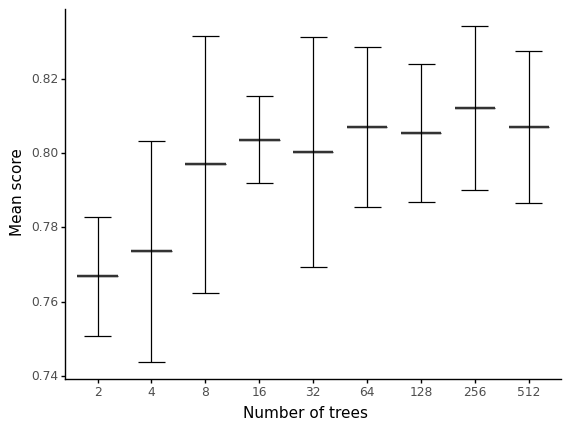
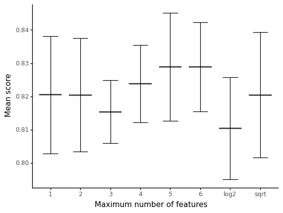

Optimising random forest hyperparameters
Typically the hyper-parameters which will have the most significant impact on the behaviour of a random forest are the following:
- The number of decision trees in a random forest
- The split criteria
- Maximum depth of individual trees
- Minimum samples per internal node
- Maximum number of leaf nodes
- Random features per split
- Number of samples in bootstrap dataset
We will look at each of these hyper-parameters individually with examples of how to select them.
Data
To understand how we can optimise the hyperparameters in a random forest model, we will use scikit-learn's RandomForestClassifier and a subset of Titanic1 dataset.
First, we will import the features and labels using Pandas.
import pandas as pd
train_features = pd.read_csv("data/svm-hyperparameters-train-features.csv")
train_label = pd.read_csv("data/svm-hyperparameters-train-label.csv")
Let's look at a random sample of entries from this dataset, both for features and labels.
train_features.sample(10)
| Pclass | Sex | Age | SibSp | Parch | Fare | |
|---|---|---|---|---|---|---|
| 517 | 3 | 1 | 30.0 | 0 | 0 | 24.1500 |
| 538 | 3 | 1 | 30.0 | 0 | 0 | 14.5000 |
| 735 | 3 | 1 | 28.5 | 0 | 0 | 16.1000 |
| 75 | 3 | 1 | 25.0 | 0 | 0 | 7.6500 |
| 395 | 3 | 1 | 22.0 | 0 | 0 | 7.7958 |
| 560 | 3 | 1 | 30.0 | 0 | 0 | 7.7500 |
| 875 | 3 | 0 | 15.0 | 0 | 0 | 7.2250 |
| 579 | 3 | 1 | 32.0 | 0 | 0 | 7.9250 |
| 701 | 1 | 1 | 35.0 | 0 | 0 | 26.2875 |
| 707 | 1 | 1 | 42.0 | 0 | 0 | 26.2875 |
Some of the available features are:
Pclass, ticket classSexAge, age in yearsSibsp, number of siblings/spouses aboardParch, number of parents/children aboardFare, passenger fare
train_label.sample(10)
| Survived | |
|---|---|
| 342 | 0 |
| 436 | 0 |
| 414 | 1 |
| 379 | 0 |
| 847 | 0 |
| 397 | 0 |
| 82 | 1 |
| 671 | 0 |
| 317 | 0 |
| 681 | 1 |
The outcome label indicates whether a passenger survived the disaster.
As part of the typical initial steps for model training, we will prepare the data by splitting it into a training and testing subset.
from sklearn.model_selection import train_test_split
X_train, X_test, y_train, y_test = train_test_split(train_features, train_label, test_size=0.33, random_state=23)
Naive model
First we will train a "naive" model, that is a model using the defaults provided by RandomForestClassifier2. These defaults are:
n_estimators = 10criterion=’gini’max_depth=Nonemin_samples_split=2min_samples_leaf=1min_weight_fraction_leaf=0.0max_features=’auto’max_leaf_nodes=Nonemin_impurity_decrease=0.0min_impurity_split=Nonebootstrap=Trueoob_score=Falsen_jobs=1random_state=Noneverbose=0warm_start=Falseclass_weight=None
We will instantiate a random forest classifier:
from sklearn.ensemble import RandomForestClassifier
rf = RandomForestClassifier()
And training it using the X_train and y_train subsets using the appropriate fit method3.
true_labels = train_label.values.ravel()
rf.fit(X_train, y_train.values.ravel())
RandomForestClassifier()
We can now evaluate trained naive model's score.
from sklearn.metrics import precision_score
predicted_labels = rf.predict(X_test)
precision_score(y_test, predicted_labels)
0.7592592592592593
Hyperparameter search
A simple example of a generic hyperparameter search using the GridSearchCV method in scikit-learn. The score used to measure the "best" model is the mean_test_score, but other metrics could be used, such as the Out-of-bag (OOB) error.
parameters = {
"n_estimators":[5,10,50,100,250],
"max_depth":[2,4,8,16,32,None]
}
rfc = RandomForestClassifier()
from sklearn.model_selection import GridSearchCV
cv = GridSearchCV(rfc,parameters,cv=5)
cv.fit(X_train, y_train.values.ravel())
GridSearchCV(cv=5, estimator=RandomForestClassifier(),
param_grid={'max_depth': [2, 4, 8, 16, 32, None],
'n_estimators': [5, 10, 50, 100, 250]})
def display(results):
print(f'Best parameters are: {results.best_params_}')
print("\n")
mean_score = results.cv_results_['mean_test_score']
std_score = results.cv_results_['std_test_score']
params = results.cv_results_['params']
for mean,std,params in zip(mean_score,std_score,params):
print(f'{round(mean,3)} + or -{round(std,3)} for the {params}')
display(cv)
Best parameters are: {'max_depth': 8, 'n_estimators': 50}
0.795 + or -0.02 for the {'max_depth': 2, 'n_estimators': 5}
0.775 + or -0.024 for the {'max_depth': 2, 'n_estimators': 10}
0.774 + or -0.025 for the {'max_depth': 2, 'n_estimators': 50}
0.779 + or -0.02 for the {'max_depth': 2, 'n_estimators': 100}
0.78 + or -0.018 for the {'max_depth': 2, 'n_estimators': 250}
0.814 + or -0.024 for the {'max_depth': 4, 'n_estimators': 5}
0.81 + or -0.028 for the {'max_depth': 4, 'n_estimators': 10}
0.807 + or -0.022 for the {'max_depth': 4, 'n_estimators': 50}
0.804 + or -0.018 for the {'max_depth': 4, 'n_estimators': 100}
0.817 + or -0.025 for the {'max_depth': 4, 'n_estimators': 250}
0.815 + or -0.017 for the {'max_depth': 8, 'n_estimators': 5}
0.815 + or -0.017 for the {'max_depth': 8, 'n_estimators': 10}
0.822 + or -0.019 for the {'max_depth': 8, 'n_estimators': 50}
0.82 + or -0.014 for the {'max_depth': 8, 'n_estimators': 100}
0.82 + or -0.016 for the {'max_depth': 8, 'n_estimators': 250}
0.807 + or -0.028 for the {'max_depth': 16, 'n_estimators': 5}
0.812 + or -0.028 for the {'max_depth': 16, 'n_estimators': 10}
0.814 + or -0.028 for the {'max_depth': 16, 'n_estimators': 50}
0.807 + or -0.028 for the {'max_depth': 16, 'n_estimators': 100}
0.812 + or -0.026 for the {'max_depth': 16, 'n_estimators': 250}
0.779 + or -0.036 for the {'max_depth': 32, 'n_estimators': 5}
0.807 + or -0.027 for the {'max_depth': 32, 'n_estimators': 10}
0.814 + or -0.021 for the {'max_depth': 32, 'n_estimators': 50}
0.802 + or -0.023 for the {'max_depth': 32, 'n_estimators': 100}
0.797 + or -0.021 for the {'max_depth': 32, 'n_estimators': 250}
0.789 + or -0.027 for the {'max_depth': None, 'n_estimators': 5}
0.795 + or -0.033 for the {'max_depth': None, 'n_estimators': 10}
0.804 + or -0.023 for the {'max_depth': None, 'n_estimators': 50}
0.802 + or -0.014 for the {'max_depth': None, 'n_estimators': 100}
0.815 + or -0.021 for the {'max_depth': None, 'n_estimators': 250}
Parameters
Number of decision trees
This is specified using the n_estimators hyper-parameter on the random forest initialisation.
Typically, a higher number of trees will lead to greater accuracy at the expense of model size and training time.
cv = GridSearchCV(rfc,{"n_estimators":[2, 4, 8, 16, 32, 64, 128, 256, 512]},cv=5)
cv.fit(X_train, y_train.values.ravel())
GridSearchCV(cv=5, estimator=RandomForestClassifier(),
param_grid={'n_estimators': [2, 4, 8, 16, 32, 64, 128, 256, 512]})
results = pd.DataFrame({"n_estimators": [param["n_estimators"] for param in cv.cv_results_['params']],
"mean_score": list(cv.cv_results_['mean_test_score']),
"std_score": cv.cv_results_['std_test_score']})
results
| n_estimators | mean_score | std_score | |
|---|---|---|---|
| 0 | 2 | 0.766793 | 0.016062 |
| 1 | 4 | 0.773515 | 0.029848 |
| 2 | 8 | 0.796989 | 0.034546 |
| 3 | 16 | 0.803669 | 0.011729 |
| 4 | 32 | 0.800308 | 0.030873 |
| 5 | 64 | 0.807073 | 0.021654 |
| 6 | 128 | 0.805378 | 0.018606 |
| 7 | 256 | 0.812101 | 0.022103 |
| 8 | 512 | 0.807059 | 0.020457 |
from plotnine import *
(
ggplot(results) + geom_boxplot(aes(x='factor(n_estimators)', y='mean_score')) +
geom_errorbar(aes(x='factor(n_estimators)', ymin='mean_score - std_score', ymax='mean_score + std_score')) +
theme_classic() + xlab('Number of trees') + ylab('Mean score')
)

<ggplot: (358398967)>
The split criteria
At each node, a random forest decides, according to a specific algorithm, which feature and value split the tree. Therefore, the choice of splitting algorithm is crucial for the random forest's performance.
Since, in this example, we are dealing with a classification problem, the choices of split algorithm are, for instance:
- Gini
- Entropy
If we were dealing with a random forest for regression, other methods (such as MSE) would be a possible choice. We will now compare both split algorithms as specified above, in training a random forest with our data:
rfc = RandomForestClassifier(n_estimators=256)
cv = GridSearchCV(rfc,{"criterion": ["gini", "entropy"]},cv=5)
cv.fit(X_train, y_train.values.ravel())
GridSearchCV(cv=5, estimator=RandomForestClassifier(n_estimators=256),
param_grid={'criterion': ['gini', 'entropy']})
results = pd.DataFrame({"criterion": [param["criterion"] for param in cv.cv_results_['params']],
"mean_score": list(cv.cv_results_['mean_test_score']),
"std_score": cv.cv_results_['std_test_score']})
results
| criterion | mean_score | std_score | |
|---|---|---|---|
| 0 | gini | 0.802003 | 0.023607 |
| 1 | entropy | 0.812087 | 0.013550 |
Maximum depth of individual trees
In theory, the "longer" the tree, the more splits it can have and better accommodate the data. However, at the tree level can this can lead to overfitting. Although this is a problem for decision trees, it is not necessarily a problem for the ensemble, the random forest. Although the key is to strike a balance between trees that aren't too large or too short, there's no universal heuristic to determine the size. Let's try a few option for maximum depth:
rfc = RandomForestClassifier(n_estimators=256,
criterion="entropy")
cv = GridSearchCV(rfc,{'max_depth': [2, 4, 8, 16, 32, None]},cv=5)
cv.fit(X_train, y_train.values.ravel())
GridSearchCV(cv=5,
estimator=RandomForestClassifier(criterion='entropy',
n_estimators=256),
param_grid={'max_depth': [2, 4, 8, 16, 32, None]})
results = pd.DataFrame({"max_depth": [param["max_depth"] for param in cv.cv_results_['params']],
"mean_score": list(cv.cv_results_['mean_test_score']),
"std_score": cv.cv_results_['std_test_score']})
results = results.dropna()
results
| max_depth | mean_score | std_score | |
|---|---|---|---|
| 0 | 2.0 | 0.770154 | 0.018592 |
| 1 | 4.0 | 0.817185 | 0.022074 |
| 2 | 8.0 | 0.812087 | 0.008403 |
| 3 | 16.0 | 0.805378 | 0.019350 |
| 4 | 32.0 | 0.813768 | 0.018610 |
from plotnine import *
(
ggplot(results) + geom_boxplot(aes(x='factor(max_depth)', y='mean_score')) +
theme_classic() + xlab('Max tree depth') + ylab('Mean score')
)

<ggplot: (358468337)>
Maximum number of leaf nodes
This hyperparameter can be of importance to other topics, such as Explainability.
It is specified in scikit-learn using the max_leaf_nodes parameter. Let's try a few different values:
rfc = RandomForestClassifier(n_estimators=256,
criterion="entropy",
max_depth=8)
cv = GridSearchCV(rfc,{'max_leaf_nodes': [2**i for i in range(1, 8)]},cv=5)
cv.fit(X_train, y_train.values.ravel())
GridSearchCV(cv=5,
estimator=RandomForestClassifier(criterion='entropy', max_depth=8,
n_estimators=256),
param_grid={'max_leaf_nodes': [2, 4, 8, 16, 32, 64, 128]})
results = pd.DataFrame({"max_leaf_nodes": [param["max_leaf_nodes"] for param in cv.cv_results_['params']],
"mean_score": list(cv.cv_results_['mean_test_score']),
"std_score": cv.cv_results_['std_test_score']})
results = results.dropna()
results
| max_leaf_nodes | mean_score | std_score | |
|---|---|---|---|
| 0 | 2 | 0.755014 | 0.024759 |
| 1 | 4 | 0.773487 | 0.024367 |
| 2 | 8 | 0.817185 | 0.026706 |
| 3 | 16 | 0.812115 | 0.014137 |
| 4 | 32 | 0.813782 | 0.019204 |
| 5 | 64 | 0.812073 | 0.008712 |
| 6 | 128 | 0.813754 | 0.013498 |
from plotnine import *
(
ggplot(results) + geom_boxplot(aes(x='factor(max_leaf_nodes)', y='mean_score')) +
geom_errorbar(aes(x='factor(max_leaf_nodes)', ymin='mean_score - std_score', ymax='mean_score + std_score')) +
theme_classic() + xlab('Maximum leaf nodes') + ylab('Mean score')
)

<ggplot: (358911004)>
Random features per split
This is an important hyperparameter that will depend on how noisy the original data is. Typically, if the data is not very noisy, the number of used random features can be kept low. Otherwise, it needs to be kept high.
An important consideration is also the following trade-off:
- A low number of random features decrease the forest's overall variance
- A low number of random features increases the bias
- A high number of random features increases computational time
In scikit-learn this is specified with the max_features parameter. Assuming \(N_f\) is the total number of features,
some possible values for this parameter are:
sqrt, this will take themax_featuresas the rounded \(\sqrt{N_f}\)log2, as above, takes the \(\log_2(N_f)\)- The actual maximum number of features can be directly specified
Let's try a simple benchmark, even though our data does not have many features to begin with:
rfc = RandomForestClassifier(n_estimators=256,
criterion="entropy",
max_depth=8)
cv = GridSearchCV(rfc,{'max_features': ["sqrt", "log2", 1, 2, 3, 4, 5, 6]},cv=5)
cv.fit(X_train, y_train.values.ravel())
GridSearchCV(cv=5,
estimator=RandomForestClassifier(criterion='entropy', max_depth=8,
n_estimators=256),
param_grid={'max_features': ['sqrt', 'log2', 1, 2, 3, 4, 5, 6]})
results = pd.DataFrame({"max_features": [param["max_features"] for param in cv.cv_results_['params']],
"mean_score": list(cv.cv_results_['mean_test_score']),
"std_score": cv.cv_results_['std_test_score']})
results
| max_features | mean_score | std_score | |
|---|---|---|---|
| 0 | sqrt | 0.820476 | 0.018793 |
| 1 | log2 | 0.810420 | 0.015345 |
| 2 | 1 | 0.820504 | 0.017704 |
| 3 | 2 | 0.820490 | 0.017064 |
| 4 | 3 | 0.815420 | 0.009488 |
| 5 | 4 | 0.823838 | 0.011681 |
| 6 | 5 | 0.828880 | 0.016225 |
| 7 | 6 | 0.828880 | 0.013361 |
from plotnine import *
(
ggplot(results) + geom_boxplot(aes(x='factor(max_features)', y='mean_score')) +
geom_errorbar(aes(x='factor(max_features)', ymin='mean_score - std_score', ymax='mean_score + std_score')) +
theme_classic() + xlab('Maximum number of features') + ylab('Mean score')
)

<ggplot: (358798611)>
Bootstrap dataset size
This hyperparameter relates to the proportion of the training data to be used by decision trees.
It is specified in scikit-learn by max_samples and can take the value of either:
None, take the entirety of the samples- An integer, representing the actual number of samples
- A float, representing a proportion between
0and1or the samples to take.
Let's try a hyperparameter search with some values:
rfc = RandomForestClassifier(n_estimators=256,
criterion="entropy",
max_depth=8,
max_features=6)
cv = GridSearchCV(rfc,{'max_samples': [i/10.0 for i in range(1, 10)]},cv=5)
cv.fit(X_train, y_train.values.ravel())
GridSearchCV(cv=5,
estimator=RandomForestClassifier(criterion='entropy', max_depth=8,
max_features=6,
n_estimators=256),
param_grid={'max_samples': [0.1, 0.2, 0.3, 0.4, 0.5, 0.6, 0.7, 0.8,
0.9]})
results = pd.DataFrame({"max_samples": [param["max_samples"] for param in cv.cv_results_['params']],
"mean_score": list(cv.cv_results_['mean_test_score']),
"std_score": cv.cv_results_['std_test_score']})
results
| max_samples | mean_score | std_score | |
|---|---|---|---|
| 0 | 0.1 | 0.805434 | 0.021459 |
| 1 | 0.2 | 0.817171 | 0.019534 |
| 2 | 0.3 | 0.815448 | 0.010392 |
| 3 | 0.4 | 0.818796 | 0.016416 |
| 4 | 0.5 | 0.832227 | 0.019042 |
| 5 | 0.6 | 0.827199 | 0.015364 |
| 6 | 0.7 | 0.825518 | 0.016115 |
| 7 | 0.8 | 0.820490 | 0.011031 |
| 8 | 0.9 | 0.827199 | 0.014415 |
from plotnine import *
(
ggplot(results) + geom_boxplot(aes(x='factor(max_samples)', y='mean_score')) +
geom_errorbar(aes(x='factor(max_samples)', ymin='mean_score - std_score', ymax='mean_score + std_score')) +
theme_classic() + xlab('Proportion bootstrap samples') + ylab('Mean score')
)

<ggplot: (358907088)>